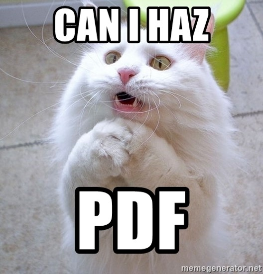

Building Awesome Document Worklows with APIs
AKA
Doing Cool Stuff with Documents!!
read.me
- Raymond Camden
- Senior Developer Evangelist for Adobe
- raymondcamden.com
- @raymondcamden (DMs are open!)

The Problem
The Problem...
- Documents in different formats, qualities, etc
- PDFs in different qualities, etc
- Data that needs to become a document
- Need to create a process to convert, optimize, and save
- A way to view these documents online
The Solution
- APIs to convert into PDF (when necessary)
- APIs to check PDFs (OCR, etc)
- APIs to optimize PDFs
- Consistent viewing experience
Adobe Document Services
- Manipulating (slice, dice, etc) PDFs on the Server
- Viewing (plus more) PDFs on the Web
Adobe Document Services
- Adobe PDF Services API
- Adobe Document Generation API
- Adobe PDF Extract API
- Adobe PDF Embed API
Adobe PDF Embed API
Adobe PDF Embed API
- JavaScript solution for viewing PDFs on the Web
- Provides much more control over the experience
- Multiple viewing types
- Multiple hooks into the document
- Free
Demo
How's It Done...
Steps
- Get a key
 www.adobe.io/apis/documentcloud/dcsdk/pdf-embed.html
www.adobe.io/apis/documentcloud/dcsdk/pdf-embed.html
 console.adobe.io
console.adobe.io
Keys are HOST specific!
Steps
- Get a key
- Load the library
<script src="https://documentcloud.adobe.com/view-sdk/main.js">
</script>
Steps
- Get a key
- Load the library
- Check for library load
Option 1
document.addEventListener("adobe_dc_view_sdk.ready", function() {
// stuff here
});
Option 2 (Use This!)
if(window.AdobeDC) displayPDF();
else document.addEventListener("adobe_dc_view_sdk.ready",
() => displayPDF());
Steps
- Get a key
- Load the library
- Check for library load
- Initialize and load PDF
// ADOBE_KEY is your credential
// mypdf is the ID of a div in your HTML
let adobeDCView = new AdobeDC.View({
clientId: ADOBE_KEY,
divId: "mypdf"
});
adobeDCView.previewFile({
content:{ location: { url: "pdfs/cat.pdf" }},
metaData:{ fileName: "cat.pdf" }
});
Demo

Changing the View
- "Sized Container" (focused on one page at a time)
- "Full Window" (default, displays PDF in stream)
- "In-Line" (stretches the PDF length wise to show whole thing)
- "Lightbox" (modal window)
Specify Mode
let adobeDCView = new AdobeDC.View({
clientId: ADOBE_KEY, divId: "mypdf"
});
adobeDCView.previewFile({
content: { location: {url: "/pdfs/cat.pdf"} },
metaData: { fileName: "cat.pdf" }
},
{
embedMode: "IN_LINE"
});
Demo
More Customization
- Show/Hide UI
- Disable Print/Save
- Disable annotations/comments
- UI customization docs
Tweak UI
let adobeDCView = new AdobeDC.View({
clientId: ADOBE_KEY, divId: "mypdf"
});
adobeDCView.previewFile({
content: { location: {url: "/pdfs/cat.pdf"} },
metaData: { fileName: "cat.pdf" }
},
{
showDownloadPDF: false,
showPrintPDF: false,
showAnnotationTools: false,
showLeftHandPanel: false
});
Demo
Integrations and Events
- Get metadata
- Change pages, change zooms, do searches
- Annotation API
- Adobe Analytics
- Event support
Online Sandbox
Off to Server Land!
APIs (Why we're here, right?)
- Three core services
- SDKs for Java, Node, .Net, and Python*
- REST APIs
- Not free (but trial for 1K calls over 6 months)
- Credentials required (2 parts)
Features
- PDF Services API
- Document Generation API
- PDF Extract API
PDF Services API
- Formely known as PDF Tools API
- Everything related to PDF creation and manipulation
PDF Services API
- Create a PDF from Word, Powerpoint, Excel, text, images, static and dynamic HTML
- Export a PDF to Office, text, or images
- Combine PDFs (or specific pages) into one
- OCR a PDF
- Compress and Linearize a PDF
- Add a password or lock permissions (like print)
- Insert, replace, shift around, rotate, and remove pages
- Split a PDF by number of pages, ranges, or file count
- Get PDF properties
General Pseudo-Code Flow
make a credentials object
create an execution context specific to your operation
(merge pdf, ocr pdf, etc)
set your input
execute
save result
const credentials = PDFServicesSdk.Credentials
.serviceAccountCredentialsBuilder()
.fromFile('./pdftools-api-credentials.json')
.build();
const executionContext =
PDFServicesSdk.ExecutionContext.create(credentials);
const ocrOperation = PDFServicesSdk.OCR.Operation.createNew();
// Set operation input from a source file.
const input =
PDFServicesSdk.FileRef.createFromLocalFile('ocrInput.pdf',
PDFServicesSdk.OCR.SupportedMediaTypes.pdf );
ocrOperation.setInput(input);
// Execute the operation and save the result.
ocrOperation.execute(executionContext)
.then(result => result.saveAsFile('ocrOutput.pdf'));
Demo
/demos/services/ocr_example.js
PDF Services API (More)
- Remember: Used to be PDF Tools
- Credential info can be passed in via methods
- You can chain (do OCR, do password protect)
Document Generation API
- Uses a Word document as a template
- Our API takes the document + your data
- Outputs a PDF (or Word)


Document Generation API
- Uses JSONata (https://jsonata.org/)
- Supports looping, conditionals, formatting functions
- "Your data" means anything
Demo
Document Generation API
PDF Extract API
- Powered by AI/ML and Adobe Sensei
- Returns *incredibly* detailed information about a PDF document
- Can return images
- Can return tables as images, CSV, or XLSX
Demo
/demos/services/extract.js
Workflow Idea: #1
- I've got a site with PDFs...
- I'm using the Jamstack...
- At build, create a list of PDFs...
- Link to a page that accepts the PDF to be viewed in the URL
- Use PDF Embed to view it
- Using PDFs with the Jamstack
Workflow Idea: #2
- Users can upload PDFs...
- I want to store them in a protected manner...
- Automate cloud storage to protected PDF
- Pipedream Workflow
- Lambda Example
Workflow Idea: #3
- I've got a site with PDFs...
- I'm using the Jamstack...
- I want to let people search the content of PDFs
- Use PDF Extract to get the text contents of PDFs
- Connect to search engine
- Using PDFs with the Jamstack - Adding Search with Text Extraction
Resources
- Docs
- Support Forum
- StackOverflow tags: adobe-documentgeneration, adobe-embed-api, adobe-pdfservices
- Blog
- Papercuts
Questions?